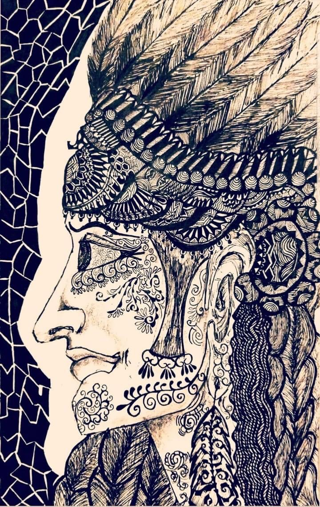

Bury My Heart
Year: 2021
Copyright owner: Aratrika Ray-Dowling
Format: traditional
Medium: 200 gsm white art paper
Tools: black pigma micron pens (.005, .01, .02, .03, .05, and .08); HB and 2B pencils
Back in 2017 when I moved to North America I came across the Native American art-form. My initial plan was to make a project heavily inspired by the art-form found in potteries, quilts, and sand art. Bury My Heart is my first project dedicated to the Native American strength of existence. I am always mesmerized by their head-dresses or war bonnets which project the strength, valor, and pride of the clan. Thus, I decided to make my first project focusing on the war bonnet. I learned a lot more about Native American history since then and working on knowing more. At this point, all I can say is there are more projects yet to come on my portfolio that will portray North American lives, history, and art-forms.
